第04讲 卷积神经网络（CNN）
一、回顾：单隐含层网络
1.1 单隐含层网络的结构
在介绍卷积神经网络之前，我们先回顾一下前馈神经网络中的单隐含层网络。
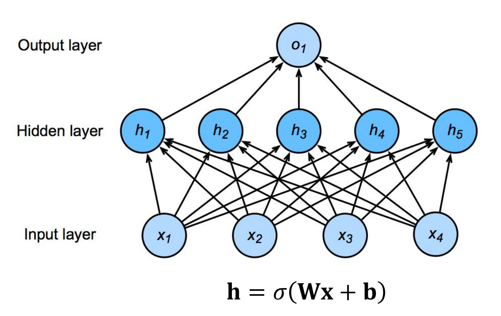
它的数学表达为：
其中：
- \(\mathbf{x}\) 是输入向量
- \(\mathbf{W}\) 是权重矩阵
- \(\mathbf{b}\) 是偏差向量
- \(\sigma\) 是激活函数（如 ReLU、Sigmoid 等）
- \(\mathbf{h}\) 是隐含层的输出
1.2 图像输入带来的参数爆炸
当我们将图像作为输入时，问题就出现了。以 CIFAR-10 数据集中的图像为例：
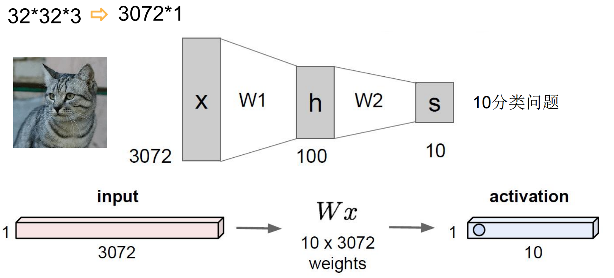
- 图像尺寸：32 × 32 像素
- 颜色通道：3（RGB）
- 输入节点数 = 32 × 32 × 3 = 3,072
如果隐含层有 100 个神经元，那么：
权重参数数量 = 3,072 × 100 = 307,200 个
这还只是一个隐含层！如果网络更深、图像更大，参数量会呈指数级增长。
1.3 全连接网络的三个缺陷
将全连接网络直接用于图像处理存在三大问题：
| 问题 | 描述 | CNN 的解决方案 |
|---|---|---|
| 参数量巨大 | 每个像素与每个神经元全连接 | 局部连接 + 权值共享 |
| 空间信息丢失 | 将二维图像展平为一维向量，破坏空间结构 | 保留二维结构进行卷积 |
| 平移变化敏感 | 物体位置稍有变化，网络就难以识别 | 平移不变性（卷积+池化） |
这三个问题直接催生了卷积神经网络（CNN）的诞生。
二、卷积神经网络概述
2.1 什么是 CNN？
卷积神经网络（Convolutional Neural Networks，CNN）是一类专门为处理网格化数据（如图像）而设计的深度神经网络。其核心思想是使用卷积运算替代全连接层中的矩阵乘法。
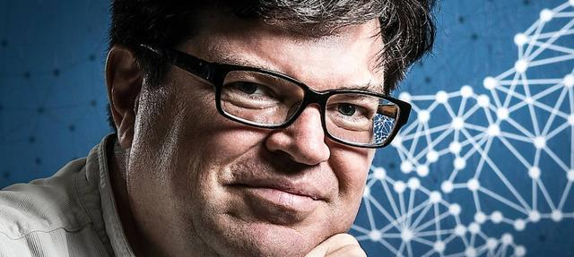
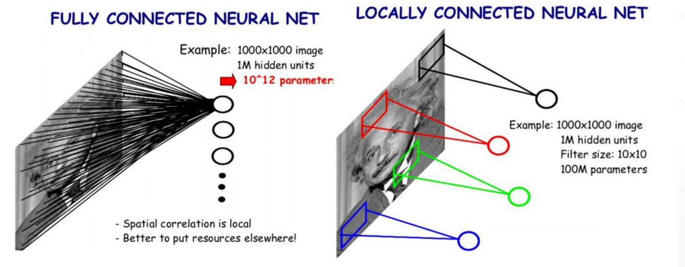
2.2 CNN 的基本架构
典型的 CNN 架构包含以下层次结构：
- 卷积层：提取局部特征（边缘、纹理、形状等）
- 池化层：降低空间分辨率，提供平移不变性
- 全连接层：综合特征进行最终分类
2.3 CNN 之父——Yann LeCun（杨立昆）
Yann LeCun 是深度学习领域的奠基人之一，被誉为"卷积神经网络之父"。他与 Geoffrey Hinton、Yoshua Bengio 并称"深度学习三巨头"，于 2018 年共同获得图灵奖。
LeCun 的关键贡献：
| 年份 | 贡献 | 意义 |
|---|---|---|
| 1989 | 将反向传播应用于卷积神经网络 | 首次证明 CNN 可以通过梯度下降训练 |
| 1998 | LeNet-5 | 最早的实用 CNN 架构，成功应用于银行支票手写数字识别，奠定了现代 CNN 的基础 |
| 2013 | Facebook AI Research（FAIR）主任 | 领导大规模 AI 研究，推动 CNN 在工业界的广泛应用 |
三、卷积运算基础
3.1 什么是卷积？
直观理解：卷积就像用一个"放大镜"（卷积核）在图像上逐行逐列滑动，每次只看一个小区域，提取该区域的局部特征。
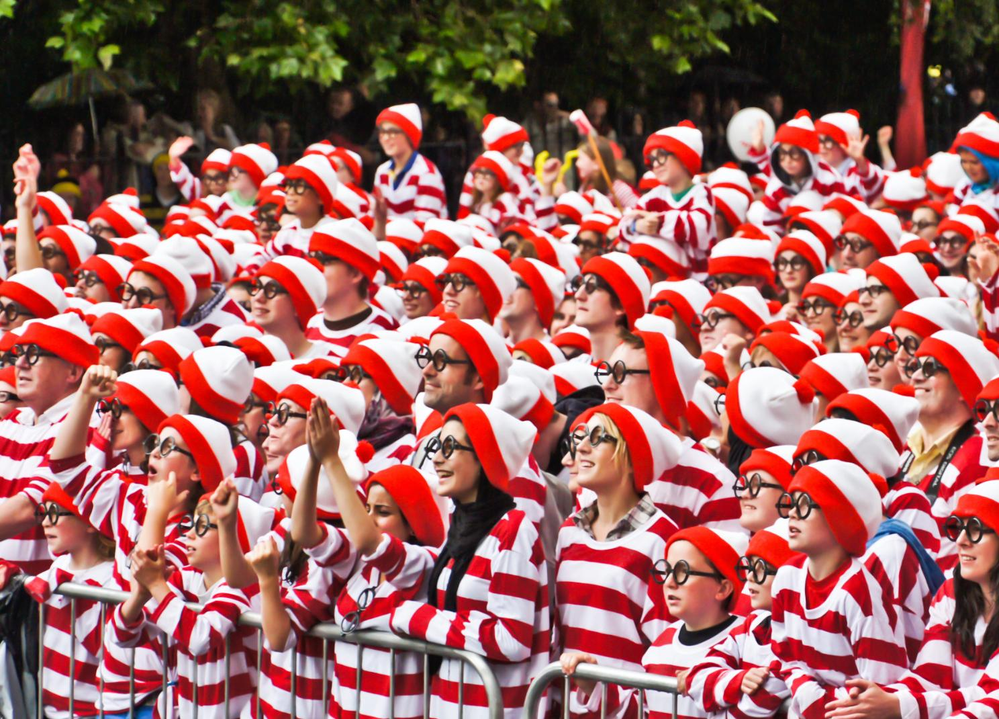
- 卷积核（Kernel / Filter）：一个小的权重矩阵，相当于"特征探测器"
- 输出（特征图）：每个位置记录核与输入局部区域的匹配程度
- 不同核 → 不同特征图：边缘检测核、模糊核、锐化核等
3.2 互相关与卷积
在数学上，有两个密切相关的概念需要区分：
核不做翻转，直接滑动计算。
核翻转180°后滑动计算。
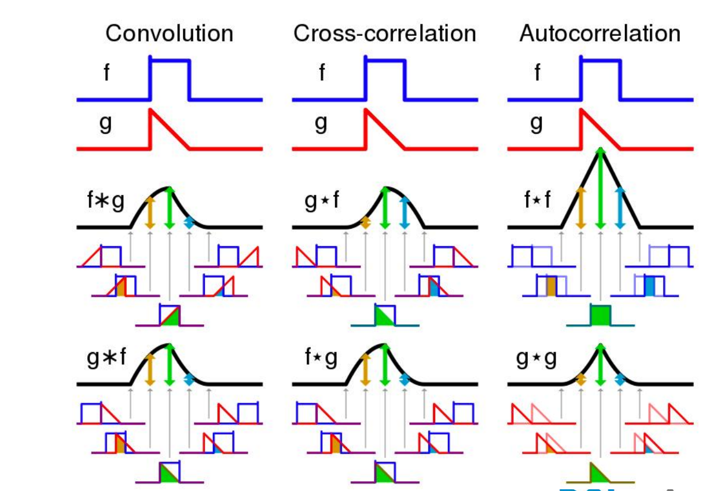
这三种运算密切相关但各有不同用途。根据上图中的对比：
| 运算 | 核心操作 | 直观理解 |
|---|---|---|
| 互相关 Cross-Correlation |
核不做翻转，直接滑动计算 | 用模板匹配：问"这张图中哪里长得像我手上的模板？"。把模板（核）放在图上滑动，匹配度越高，输出值越大。CNN 实际使用的就是这个。 |
| 卷积 Convolution |
核翻转 180° 后再滑动计算 | 用系统中的冲激响应来想：输入信号经过一个线性系统，输出是输入与系统冲激响应的卷积。翻转保证了交换律：\(f * g = g * f\)（互相关不满足交换律）。数学上更优雅，但 CNN 中翻转与否不影响学习效果。 |
| 自相关 Autocorrelation |
信号与自身做互相关 | 检测信号内部的重复模式/周期性：把信号在时间轴上平移后与原信号比较。峰值出现在位移量等于周期的地方。常用于信号处理、基因序列分析等领域。 |
3.3 二维交叉相关计算实例
输入为 3×3 矩阵，核为 2×2 矩阵。
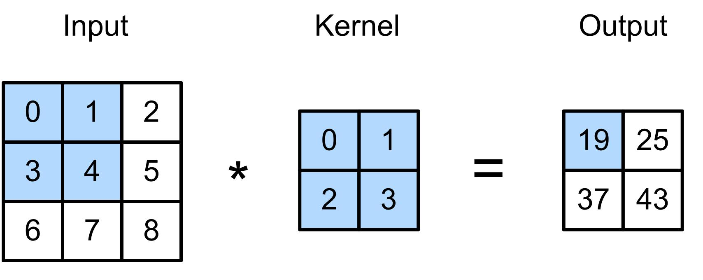
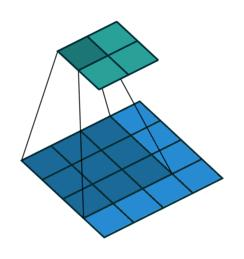
输入矩阵 X：
核矩阵 K：
计算过程（核在输入上滑动，每个位置逐元素相乘再求和）：
| 位置 | 计算过程 | 结果 |
|---|---|---|
| (0,0) | 0×0 + 1×1 + 3×2 + 4×3 | 19 |
| (0,1) | 1×0 + 2×1 + 4×2 + 5×3 | 25 |
| (1,0) | 3×0 + 4×1 + 6×2 + 7×3 | 37 |
| (1,1) | 4×0 + 5×1 + 7×2 + 8×3 | 43 |
输出矩阵 Y：
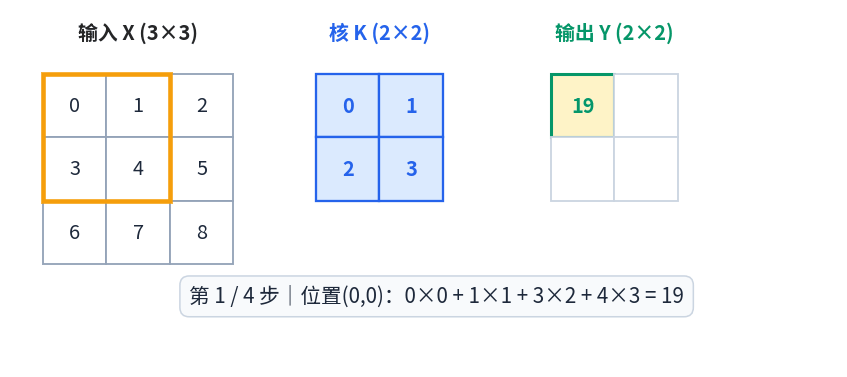
即对于 \(n_h \times n_w\) 的输入和 \(k_h \times k_w\) 的核，输出为 \((n_h - k_h + 1) \times (n_w - k_w + 1)\)。
动手试一试：卷积随手算——下面的 4×4 输入和 3×3 核都可以直接点击修改，输出实时重算；再点击任意输出格，可以看到它是哪 9 个数算出来的：
四、二维卷积层
4.1 卷积层的数学定义
二维卷积层的核心运算：
其中：
- \(\mathbf{X}\)：\(n_h \times n_w\) 输入矩阵
- \(\mathbf{W}\)：\(k_h \times k_w\) 核矩阵（可学习参数）
- \(b\)：偏差标量（可学习参数）
- \(\mathbf{Y}\)：\((n_h - k_h + 1) \times (n_w - k_w + 1)\) 输出矩阵
4.2 卷积层与全连接层的对比
| 特性 | 全连接层 | 卷积层 |
|---|---|---|
| 连接方式 | 每个输入与每个输出相连 | 局部连接（只与核窗口内的输入相连） |
| 参数量 | 输入维度 × 输出维度 | \(k_h \times k_w\)（与输入大小无关） |
| 空间结构 | 丢失（展平为一维） | 保留（二维滑动） |
| 权值共享 | 无 | 同一核在整个输入上共享 |
五、填充与步幅
5.1 填充（Padding）
为什么需要填充？
卷积运算会使输出尺寸变小。例如，3×3 输入用 2×2 核卷积得到 2×2 输出。经过多层卷积后，特征图会不断缩小，最终可能"消失"。
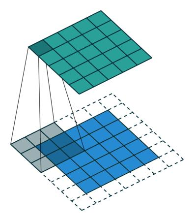
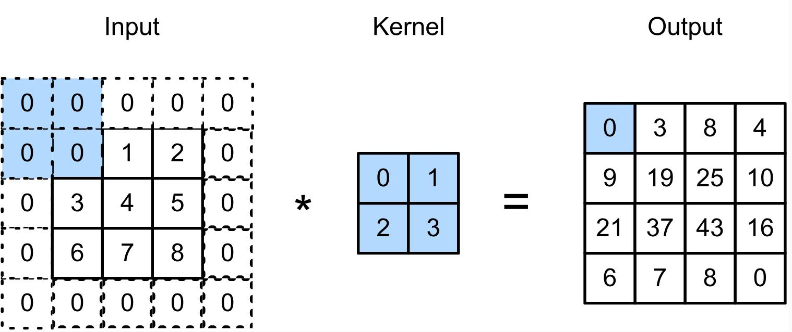
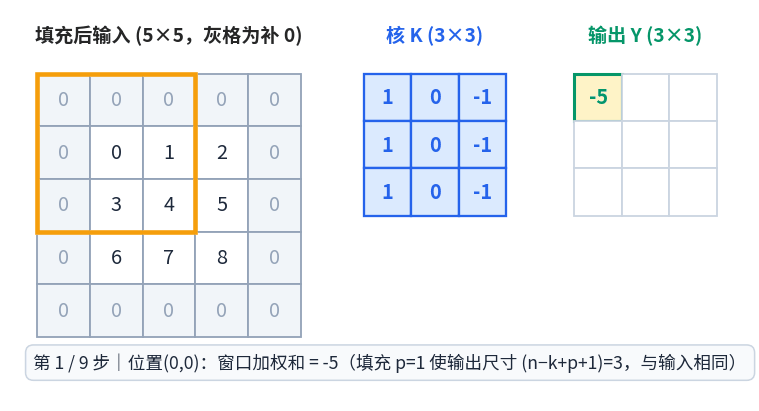
填充后的输出尺寸：
其中 \(p_h\) 和 \(p_w\) 分别是在高度和宽度方向的总填充量。
- 通常取 \(p_h = k_h - 1\)，\(p_w = k_w - 1\)（使输出与输入尺寸相同）
- 当 \(k_h\) 为奇数时：上下各填充 \(p_h / 2\)
- 当 \(k_h\) 为偶数时：上侧填充 \(\lceil p_h/2 \rceil\)，下侧填充 \(\lfloor p_h/2 \rfloor\)
5.2 步幅（Stride）
步幅是卷积核在输入上滑动时的步长。默认步幅为 1（每次移动 1 个像素）。
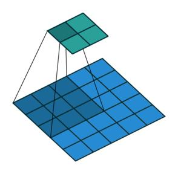
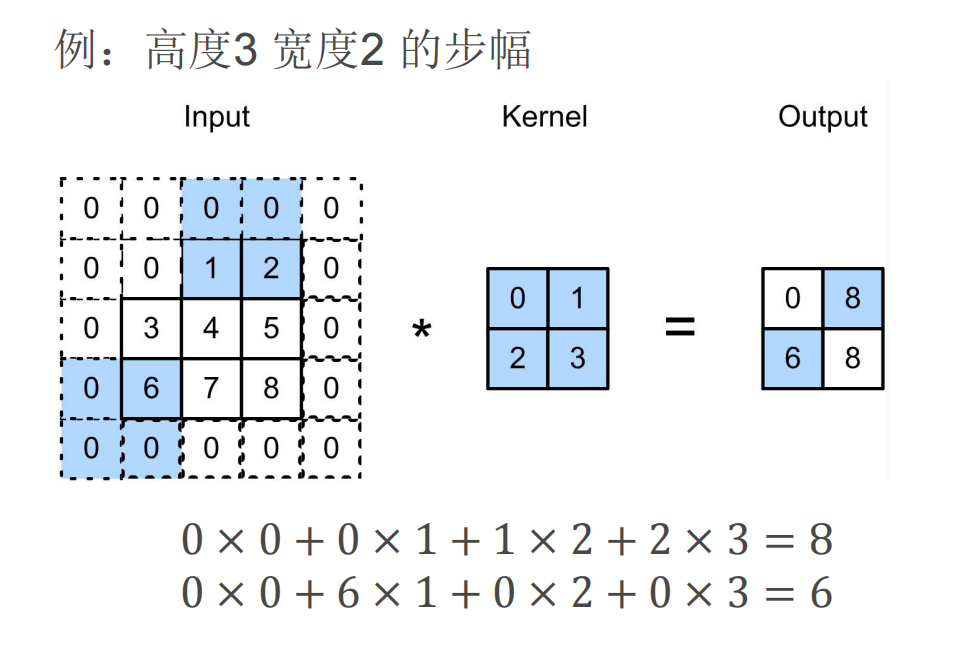
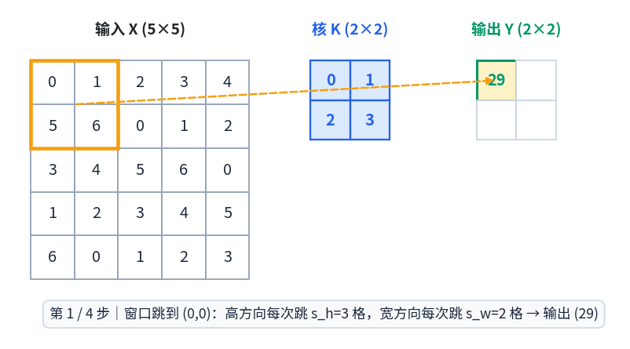
步幅后的输出尺寸：
其中 \(s_h\) 和 \(s_w\) 分别是高度和宽度的步幅。
5.3 交互演示：输出尺寸计算器
公式不必死记——拖动滑块改变输入尺寸 \(n\)、核大小 \(k\)、总填充量 \(p\) 与步幅 \(s\)，实时观察输出尺寸如何变化：
六、多输入输出通道
6.1 多个输入通道
彩色图像有 RGB 三个通道，转灰度会丢失颜色信息。因此卷积层需要处理多通道输入。
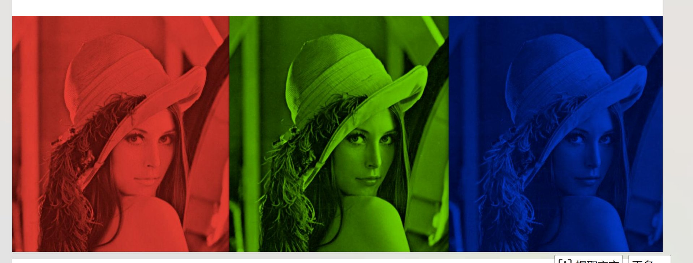
- 输入 \(\mathbf{X}\)：\(c_i \times n_h \times n_w\)（\(c_i\) 个输入通道）
- 卷积核 \(\mathbf{W}\)：\(c_i \times k_h \times k_w\)（每个输入通道对应一个核）
- 输出 \(\mathbf{Y}\)：\(n_h \times n_w\)（所有通道卷积结果求和）
多输入通道卷积公式：
计算实例：
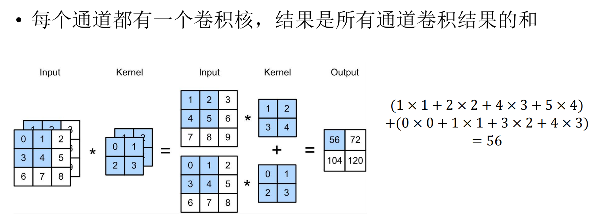
- 通道1卷积：1×1 + 2×2 + 4×3 + 5×4 = 35
- 通道2卷积：0×0 + 1×1 + 3×2 + 4×3 = 21
- 总和 = 35 + 21 = 56
下面这张动图把两个通道"各算各的、再相加"的过程完整演示一遍（2 个输入通道、2 个 2×2 核、输出 2×2）：
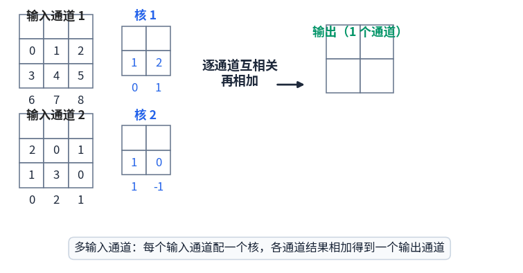
6.2 多个输出通道
要获得多个输出通道，需要使用多个三维卷积核。
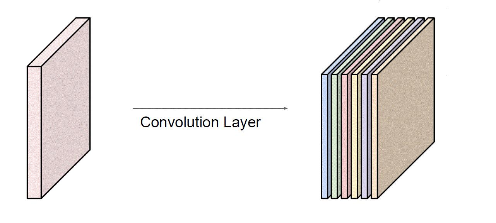
- 卷积核 \(\mathbf{W}\)：\(c_o \times c_i \times k_h \times k_w\)（\(c_o\) 个输出通道）
- 每个输出通道 \(\mathbf{O}_i = \mathbf{X} \star \mathbf{W}(i,:,:,:)\)
每个输出通道可以识别一种特定的模式，例如：
- 通道1：检测水平边缘
- 通道2：检测垂直边缘
- 通道3：检测45°对角线
- 通道4：检测特定纹理
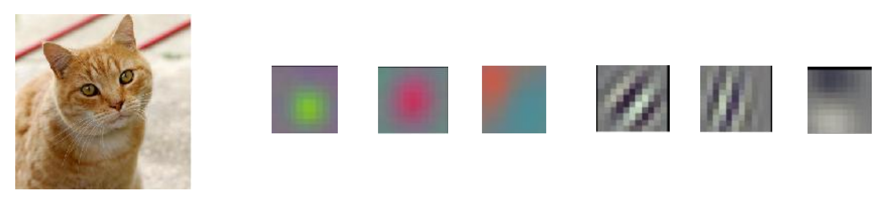
七、1×1 卷积层
7.1 什么是 1×1 卷积？
当 \(k_h = k_w = 1\) 时，卷积核退化为 1×1 大小。它不涉及空间邻域信息——每个位置只看同一像素的不同通道。
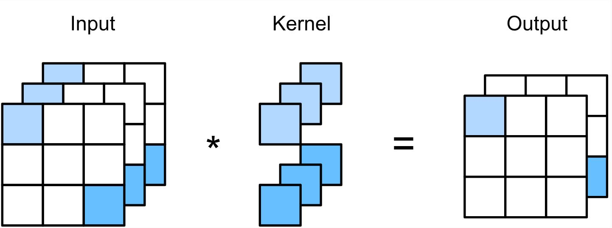
7.2 1×1 卷积的本质
1×1 卷积等价于在每个像素位置施加一个从 \(c_i\) 到 \(c_o\) 的全连接层：
- 输入：该像素位置的 \(c_i\) 个通道值
- 权重：\(c_o \times c_i\) 矩阵（所有像素共享）
- 输出：该像素位置的 \(c_o\) 个通道值
7.3 主要用途
| 用途 | 说明 |
|---|---|
| 通道数变换 | 升维（增加通道数）或降维（减少通道数） |
| 跨通道信息融合 | 在不改变空间尺寸的前提下融合通道信息 |
| 增加非线性 | 配合激活函数，增加网络的表达能力 |
1×1 卷积的核心优势在于：不改变空间尺寸，只做通道间的线性变换。可以把它理解为"给每个像素点单独做了一次矩阵乘法"。
与 3×3 卷积的本质区别：
| 维度 | 3×3 卷积 | 1×1 卷积 |
|---|---|---|
| 空间感受野 | 看当前像素 + 周围 8 个邻居（空间特征提取） | 只看当前像素自己（不做空间特征提取） |
| 通道操作 | 跨通道融合（如果 \(c_i > 1\)） | 只做通道间线性组合（混合不同通道信息） |
| 参数数目 | \(c_o \times c_i \times 3 \times 3\)（较多） | \(c_o \times c_i\)（很少，少了一个 \(k_h \times k_w\) 因子） |
| 典型场景 | 空间特征提取（边缘、纹理等） | 通道数变换、跨通道信息融合 |
八、池化层
8.1 为什么需要池化层？
卷积层对位置是敏感的——输入图像的微小偏移可能导致输出显著变化。
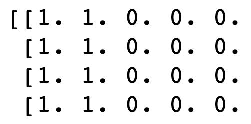
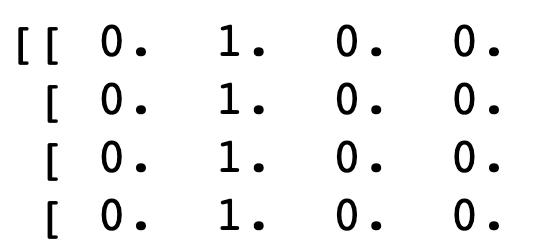
- 同一物体的照片，可能因为拍摄角度、光照、位置变化而不同
- 卷积核检测垂直边缘时，1 像素的移位可能使输出从非 0 变为 0（或反之）——输出对位置非常敏感
解决方案：池化层（Pooling Layer）。
8.2 2-D 最大池化（Max Pooling）
最大池化返回滑动窗口中的最大值：
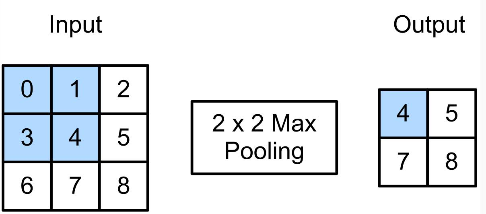
- 例：2×2 窗口，步幅为 2 → 输出空间尺寸减半
- 窗口内计算：max(0, 1, 3, 4) = 4
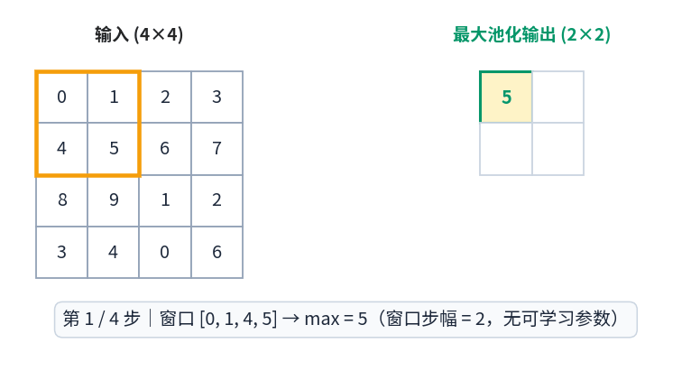
特点：
- 没有可学习的参数
- 池化后可容忍 1 像素的位置偏移
- 保留了窗口中最显著的特征信号
8.3 池化层的填充、步幅和通道
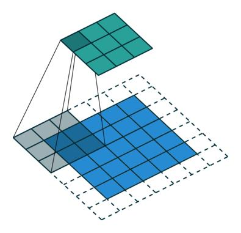
| 特性 | 说明 |
|---|---|
| 填充和步幅 | 与卷积层相同的设置方式 |
| 可学习参数 | 无（纯粹的函数运算） |
| 通道处理 | 在每个输入通道上独立应用 |
| 输出通道数 | 等于输入通道数（这一点与卷积层不同！） |
8.4 平均池化（Average Pooling）
| 池化类型 | 操作 | 特点 |
|---|---|---|
| 最大池化 | 取窗口最大值 | 保留最强模式信号，更常用 |
| 平均池化 | 取窗口平均值 | 更平滑，保留整体分布信息 |
九、Why CNN？—— 卷积神经网络的核心优势
9.1 权值共享
卷积核可以看作一种"模板"，同一个模板在图像的各个位置滑动检测。
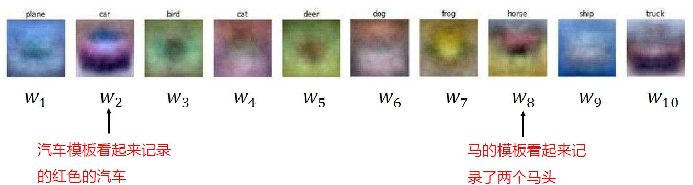
| 网络类型 | 参数量（32×32×3 图像输入，示意对比） |
|---|---|
| 全连接网络 | 3,072 × 100 = 307,200 |
| CNN（3×3 核，64 通道） | 64 × 3 × 3 × 3 = 1,728 |
9.2 局部性
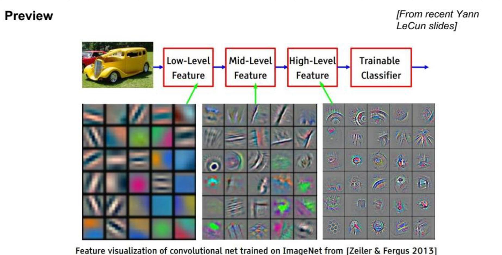
- 图像的特征是局部的：边缘、角点、纹理都在小区域内出现
- 卷积核只需关注 \(k_h \times k_w\) 的局部窗口
- 不需要每个像素与所有像素建立连接
9.3 平移不变性
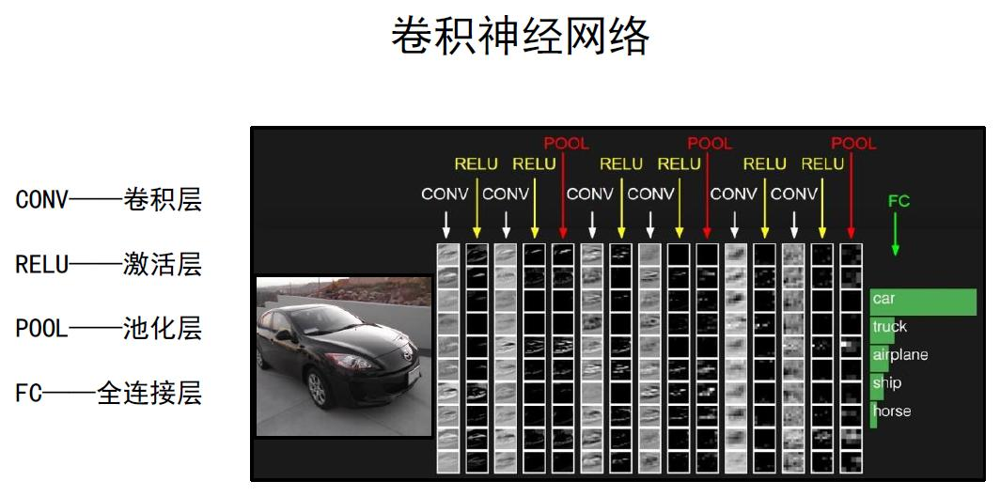
- 平移等变性（Equivariance）：卷积核的权值共享使输出随输入平移而同步平移
- 平移不变性（Invariance）：池化层使输出对小幅位移不敏感
"猫在图像的左上角和右下角，同一个卷积核都能检测到'猫耳'特征。"
9.4 层次特征学习
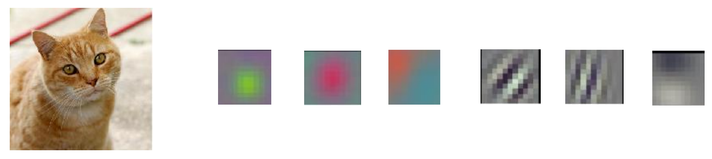
CNN 通过多层结构实现从低级到高级的特征抽象：
整个过程是端到端学习的，无需人工设计特征！
十、核心公式速查
| 公式 | 含义 |
|---|---|
| \(\mathbf{Y} = \mathbf{X} \star \mathbf{W} + b\) | 卷积层基本运算 |
| \(h(i,j) = \sum_a \sum_b X(i+a,j+b) \cdot K(a,b)\) | 二维互相关 |
| \((n_h-k_h+p_h+1) \times (n_w-k_w+p_w+1)\) | 填充后的输出尺寸 |
| \(\lfloor (n_h+p_h-k_h+s_h)/s_h \rfloor \times \lfloor (n_w+p_w-k_w+s_w)/s_w \rfloor\) | 步幅后的输出尺寸 |
| \(\mathbf{Y} = \sum_{c} \mathbf{X}(c,:,:) \star \mathbf{W}(c,:,:)\) | 多输入通道卷积 |
| \(c_o \times c_i \times k_h \times k_w\) | 卷积核的总参数量 |
十一、总结与思考
11.1 CNN 核心组件一览
-
1
卷积运算：滑动核提取局部特征，权重共享大幅减少参数
-
2
填充与步幅：灵活控制输出尺寸，适应不同网络设计需求
-
3
多通道：输入通道融合多源信息，输出通道学习多样化特征
-
4
池化层：提供平移不变性，降低空间分辨率，无额外参数
-
5
设计哲学：局部性 + 权值共享 + 平移不变性 + 层次特征